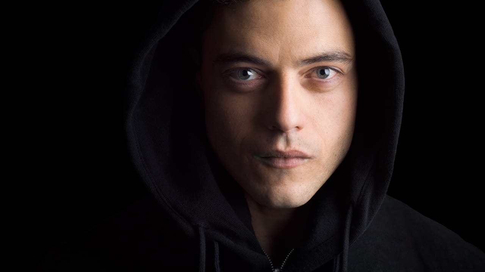
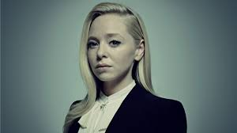
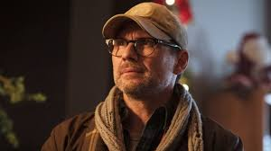
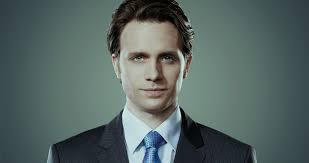
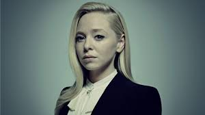
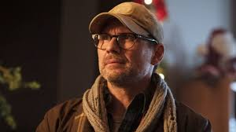
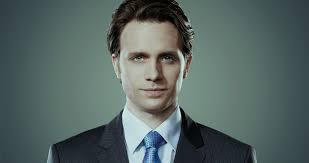

Personagens principais de mr.robot

Elliot Alderson é um engenheiro de software na Allsafe Cybersecurity e faz parte do grupo de hackers chamado Fsociety. Elliot tem transtorno de ansiedade social e depressão clinica que faz com que ele viva isolado das outras pessoas.
 A Fsociety é fomada por Elliot, Dalene, Leslie Romero, Mobley e Trenton. A Fsociety tem como objetivo derrubar a estrutura corporativa mundial, adotando um disfarce muito parecido com o Monopoly Man ao filmar seus manifestos em vídeo.

Angela Moss é amiga de infancia dos irmãos Alderson e trabalha com Elliot na Allsafe Cybersecurity.

Edward Alderson, pai do Elliot e da Darlene era conhecido como Mr.robot. E é um alter-ego de Elliot.

Tyrell Wellick é o Vice-Presidente Sênior de Tecnologia da E Corp.
Darlene Alderson é uma hacker e programadora da Fsociety, ela é irmã de Elliot e integrante da Fsociety.
A Fsociety é fomada por Elliot, Dalene, Leslie Romero, Mobley e Trenton. A Fsociety tem como objetivo derrubar a estrutura corporativa mundial, adotando um disfarce muito parecido com o Monopoly Man ao filmar seus manifestos em vídeo.

Angela Moss é amiga de infancia dos irmãos Alderson e trabalha com Elliot na Allsafe Cybersecurity.

Edward Alderson, pai do Elliot e da Darlene era conhecido como Mr.robot. E é um alter-ego de Elliot.

Tyrell Wellick é o Vice-Presidente Sênior de Tecnologia da E Corp.
Darlene Alderson é uma hacker e programadora da Fsociety, ela é irmã de Elliot e integrante da Fsociety.